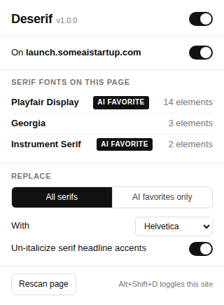

A Chrome extension that spots Playfair Display, Instrument Serif, Fraunces, Lora and the rest of the vibe-coded lineup on any page and renders them in Helvetica instead. It also names the font, so you can stop squinting at it. And on Facebook, it hides the images Meta labels as made with AI.
Free and open source. No accounts, no tracking, no API keys, nothing leaves your browser. Works in Chrome, Brave, Edge, Arc and any other Chromium browser.
Check your email
Playfair Display, the font in question
Check your email
Helvetica, after Deserif
Reads the real computed font of every element, including shadow DOM, iframes, decorative pseudo-elements, late-loading stylesheets, theme toggles, and anything added to the page after it loads.
Sans, monospace and icon fonts are never touched. Merriweather Sans stays, Merriweather goes. Font Awesome and Material Symbols keep their icons.
The popup lists every serif family on the page with element counts and tags the usual AI picks, so the "what font is this" question answers itself.
Replace all serifs, Georgia and Times included, or only the AI favorites. Swap in Helvetica, System UI, Inter, Arial or your own stack. One switch turns it off per site, or press Alt+Shift+D.
The "one word in italic serif" headline trick gets un-italicized too, inside headings that were replaced. Switch it off in the popup if you like that look.
One scan when the page finishes loading, then it only reacts to changes. Settings sync through your Chrome profile. There is no server.
Every image in a post or comment that Facebook itself has labeled "AI info" turns into a grey card the same size as the picture, so the page does not jump. Click to see it anyway. How it works.
The gold-on-navy "infographic" someone's cousin made with ChatGPT, the plastic 3D render, the motivational poster with melted letters. Meta already marks a lot of it with a small "AI info" label. Deserif reads that label and hides the pictures under it.
Meta labels posts and comments made with AI, either because the poster said so or because the file carried generator metadata. Deserif looks for that label, the same one you see next to the post, and hides every content image inside the labeled post or comment. Avatars, emoji and icons are never touched.
No API key, no uploads, no server. The check is a text match on the page you are already looking at, so it costs nothing and there is no waiting for a verdict.
The card takes the image's exact size. Click it and the original is back; the popup has Show all and Hide again for the whole page, and the badge turns red with the number hidden.
If Meta missed one, so does Deserif. Content Meta calls merely "edited with AI" keeps its label inside the post menu, where the extension cannot see it. Switch it off for facebook.com with Alt+Shift+D any time.
These get the "AI favorite" tag in the popup and are what "AI favorites only" mode targets.
Only the first one is actually loaded on this page; the chips borrow it so you get the idea. Every other serif, from Georgia to Times to a brand font nobody has heard of, is covered by "All serifs" mode.
deserif folder somewhere permanent, like Documents. Chrome reads the folder live, so if the folder goes, the extension goes.chrome://extensions into the address bar. In Brave it is brave://extensions, in Edge edge://extensions.deserif folder, the one with manifest.json inside.
Click the icon on any page and it lists every serif family it found, how many elements use it, and which ones are the AI favorites. The badge on the icon shows the count at a glance.
From the same panel: master switch, per-site switch, all-serifs or AI-only mode, the replacement font, the italic-accent option, and on a Facebook tab the labeled and hidden counts with Show all and Hide again.
Because it is the opposite of a "premium" display serif: neutral, legible, and it has been doing this job since 1957. Pick System UI or Inter in the popup if you prefer, or type any stack you want.
No. No network requests, no analytics, no accounts, no API keys. The Facebook part reads a label that is already on the page. The code is small enough to read in one sitting, and it is all on GitHub.
No. Icon fonts, monospace fonts and every sans font are excluded before the serif check runs.
It only hides what Facebook has labeled, so a miss is Facebook's miss. If Meta put its label on something you want to see, the original is one click away, and Show all in the popup brings back the whole page.
Meta changes its markup often. Open the popup on that Facebook tab, click Diagnose, copy the report and paste it into an issue. It shows what the extension saw, so the matcher can be extended.
Press Alt+Shift+D to switch it off for that site, or use the switch in the popup. Then open an issue with the URL.
Not yet. The unpacked install takes a minute and works in every Chromium browser, and it means you can read exactly what you are running.